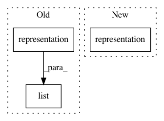

0479ca409c32f3ed79b2f45d1b65df346390ba4b,gpytorch/lazy/lazy_variable.py,LazyVariable,__getitem__,#LazyVariable#Any#,274
Before Change
index = list(index) if isinstance(index, tuple) else [index]
ndimension = self.ndimension()
index += [slice(None, None, None)] * (ndimension - len(index))
representation = list(self.representation())
squeeze_left = False
squeeze_right = False
if isinstance(index[-2], int):
After Change
components[i] = item[batch_index]
new_lazy_variable = self.__class__(*components)
representation = new_lazy_variable.representation()
ndimension = new_lazy_variable.ndimension()
// Handle index
left_index = index[-2]
In pattern: SUPERPATTERN
Frequency: 3
Non-data size: 3
Instances
Project Name: cornellius-gp/gpytorch
Commit Name: 0479ca409c32f3ed79b2f45d1b65df346390ba4b
Time: 2017-11-13
Author: gpleiss@gmail.com
File Name: gpytorch/lazy/lazy_variable.py
Class Name: LazyVariable
Method Name: __getitem__
Project Name: cornellius-gp/gpytorch
Commit Name: 2525cc3906a97436d2abdccf3bdc2decb7bf0ac0
Time: 2018-04-30
Author: gpleiss@gmail.com
File Name: gpytorch/lazy/lazy_variable.py
Class Name: LazyVariable
Method Name: matmul
Project Name: cornellius-gp/gpytorch
Commit Name: 2525cc3906a97436d2abdccf3bdc2decb7bf0ac0
Time: 2018-04-30
Author: gpleiss@gmail.com
File Name: gpytorch/lazy/lazy_variable.py
Class Name: LazyVariable
Method Name: inv_matmul